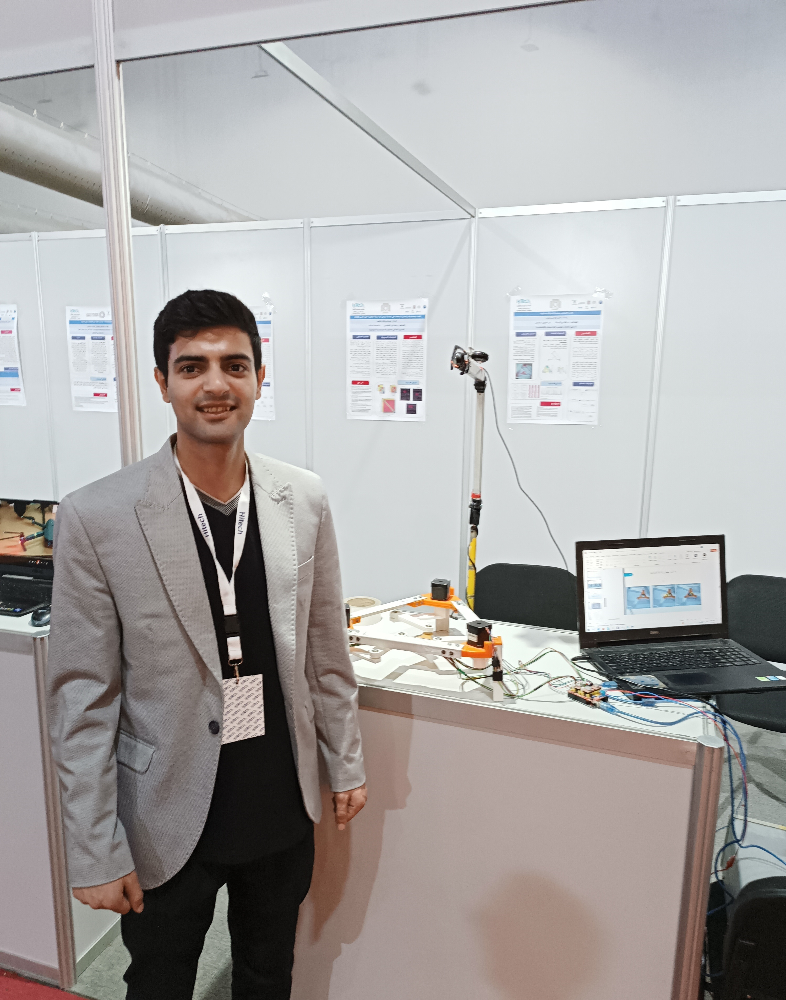

Kinan ALI
Electronic Systems Engineer

Graduated Top of Class from the Higher Institute for
Applied Sciences and Technology (HIAST).
Currently pursuing an MSc in HealthTech at the University of Strasbourg.
My work focuses on the intersection of Control Theory, Robotics, and Medical Engineering.